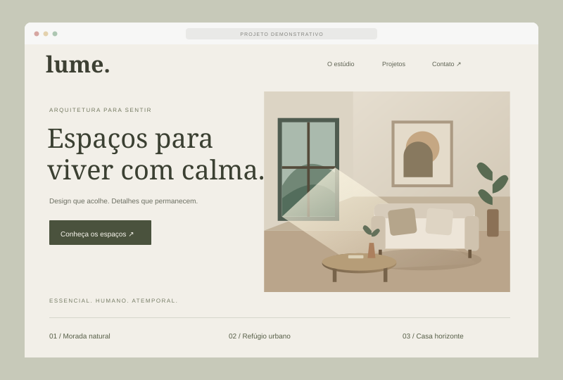
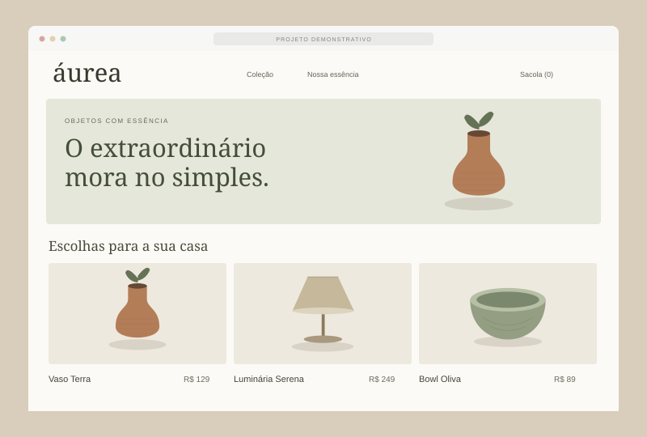
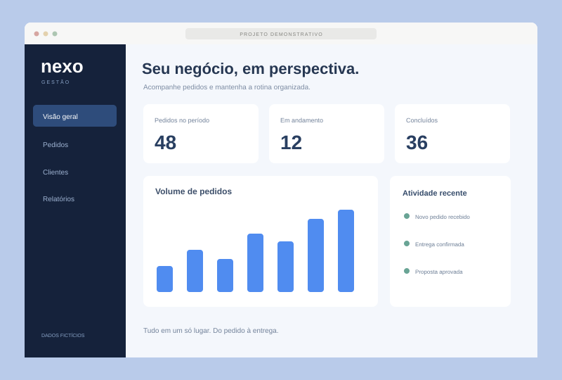
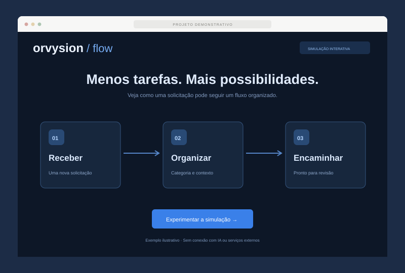
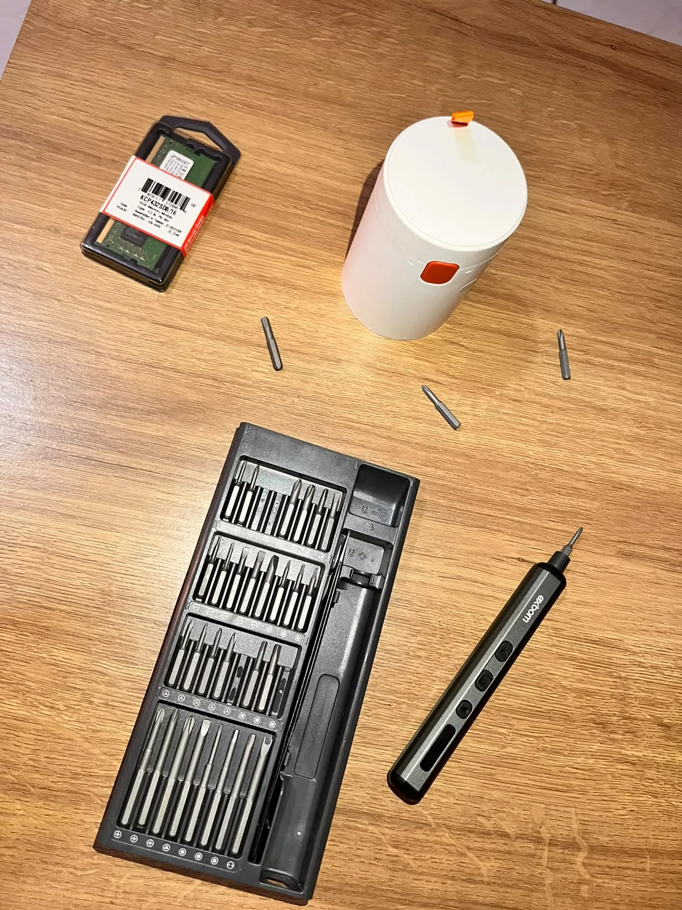

01
Montagem de computadores
Um PC pensado para o seu uso, seu orçamento e seus próximos upgrades.
- Escolha e compatibilidade de peças
- Montagem e organização dos cabos
- Configuração e testes
Do computador que você usa ao site que apresenta sua empresa. Cuidamos da tecnologia para você focar no que faz de melhor.

01 / O QUE PODEMOS FAZER POR VOCÊ
Cada necessidade pede um caminho. Encontre o seu e vamos construir a solução juntos.
Um PC pensado para o seu uso, seu orçamento e seus próximos upgrades.
Mais cuidado com seu equipamento. Mais tranquilidade para trabalhar e jogar.
Uma presença digital com a cara da sua marca, feita para apresentar e vender.
Sua rotina merece um sistema que se adapte a ela. Vamos simplificar seus processos.
Encontre a solução certa para sua necessidade, com orientação para começar a usar.
Transforme tarefas manuais em fluxos mais práticos e dê espaço às boas ideias.
Serviços, peças, licenças e prazos são definidos conforme a necessidade do projeto e a disponibilidade.
02 / IMAGINE AS POSSIBILIDADES
Explore conceitos de sites e sistemas que podemos desenvolver para o seu negócio.
Projetos fictícios, criados para demonstração.
4 projetos exibidos

Explorar demonstração
Explorar demonstraçãoCatálogo, categorias e uma jornada de compra simples.

Explorar demonstração
Explorar demonstraçãoGostou de uma direção? Adaptamos a ideia à sua marca.
Vamos criar o seu projetoMAIS TEMPO PARA O QUE IMPORTA
Tem uma tarefa que você repete todo dia? Podemos desenhar uma automação, conectar suas ferramentas e criar um primeiro protótipo para validar a ideia.
Ver uma automação na prática Escopo, prazo e eventuais custos de ferramentas são combinados no orçamento.Formulário ou canal conectado.
Categoria, resumo e próximo passo.
A equipe revisa e dá sequência.
Tecnologia como apoio. Você no controle.

03 / QUEM ESTÁ POR TRÁS
Olá, eu sou o Luiz Henrique.
O profissional por trás da Orvysion.
Sou formado em Ciência da Computação e atuo com suporte técnico, desenvolvimento e análise de dados. A Orvysion nasceu para aproximar essa experiência das necessidades de pessoas e negócios.
Da primeira conversa à entrega, você fala com quem entende do projeto. Explico as possibilidades, combinamos o que será feito e seguimos com clareza.
Uberlândia, MG · Projetos digitais para todo o Brasil
04 / SIMPLES DO COMEÇO AO FIM
Você traz a necessidade.
A gente constrói o caminho.
Você conta o que precisa, seu objetivo e o que já tem em mãos.
Alinhamos a solução, o valor, os prazos e o que está incluído.
Com sua aprovação, desenvolvemos ou executamos o serviço combinado.
Conferimos o resultado e orientamos você sobre os próximos passos.
05 / CONEXÕES QUE SOMAM
Um espaço para reunir empresas e profissionais que podem fazer parte da rede Orvysion.
Vitrine demonstrativa · Parceiros fictícios
Os nomes e as marcas abaixo são fictícios e ilustram como os parceiros serão apresentados. Não representam parcerias comerciais reais.
Componentes, periféricos e soluções para montagem e atualização de computadores.
Hospedagem, infraestrutura em nuvem e ambientes para projetos digitais.
Identidades visuais, interfaces e materiais que aproximam marcas e pessoas.
Desenvolvimento de sites, sistemas e integrações para diferentes necessidades.
Ideias de automação, assistentes e fluxos que simplificam tarefas do dia a dia.
Redes, conectividade e organização de ambientes para pessoas e empresas.
Quer apresentar sua empresa ou conversar sobre uma parceria?
ANTES DE COMEÇAR
Vamos esclarecer.
Uma boa solução começa com uma boa conversa.
Você explica o que precisa pelo WhatsApp. Para serviços técnicos, pode ser necessário avaliar o equipamento. Para projetos digitais, alinhamos as funcionalidades e o conteúdo. Você recebe os valores e o escopo para aprovar antes da execução.
Sites, sistemas, automações e serviços que permitem suporte remoto podem ser realizados para clientes de todo o Brasil. Para manutenção ou montagem presencial, consulte as condições de atendimento em Uberlândia pelo WhatsApp.
Depende da complexidade, das peças ou licenças necessárias e da disponibilidade. Valor e prazo são apresentados no orçamento, conforme a sua necessidade.
Os quatro projetos apresentados são demonstrações fictícias criadas para mostrar possibilidades de design e funcionalidades. Não representam trabalhos entregues a clientes. Podemos usar essas ideias como ponto de partida para o seu projeto.
Algumas ferramentas, hospedagens e APIs podem ter custo recorrente ou por uso. Isso depende da solução escolhida. As opções e os custos previstos são apresentados antes da contratação.
Sim. Conte qual programa você precisa e em qual equipamento será usado. Avaliamos compatibilidade, disponibilidade da licença quando necessária, instalação e configuração.
VAMOS CONVERSAR?
Um computador melhor, um negócio online ou uma rotina mais simples. Conte com a Orvysion para dar o próximo passo.
Atendimento próximo. Ideias sem fronteiras.